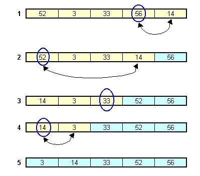
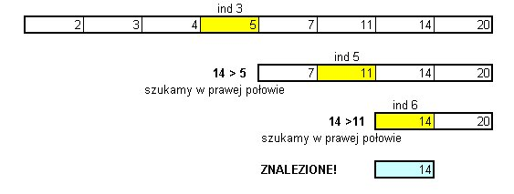
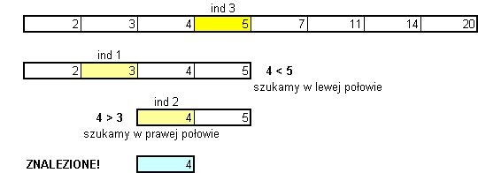
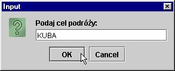
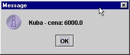

1. Proste sortowanie i wyszukiwanie
Wielokrotnie zetkniemy siê z potrzeb± uporz±dkowania informacji, u³o¿enia
danych w okre¶lonej kolejno¶ci. W uporz±dkowanych zestawach informacji ³atwiej
jest odnajdywaæ dane, zreszt± samo uporz±dkowanie mo¿e byæ niezbêdn± cech±
jakiego¶ zbioru danych. Najprostsze przyk³ady:
U³o¿enie danych w okre¶lonej kolejno¶ci oznacza jaki¶ ich porz±dek. Zwykle przy takim uk³adaniu
bêdziemy pos³ugiwaæ siê tutaj rosn±cymi (lub malej±cymi) warto¶ciami jakiej¶
cechy danych. Np. lista 10 zawodników, którzy zdobyli najwiêksz± liczbê punktów
powinna byæ uporz±dkowana wed³ug liczby punktów - od najwiêkszej do najmniejszej
(wtedy bêdziemy mogli stwierdziæ kto wygra³ zawody i jakie miejsca zajêli
poszczególni zawodnicy)

Zadanie: przed lektur± dalszego tekstu proszê spróbowaæ samodzielnie
napisaæ metodê void selectionSort(int[] a), sortuj±c± w porz±dku niemalej±cym
tablicê przekazan± jako argument>
Mo¿liwe rozwi±zanie:
public void selectionSort(int[] a) {
// toInd - oznacza ostatni indeks nieposortowanej czê¶ci tablicy
// na pocz±tku jest to ostatni indeks tablicy
// w kolejnych krokach toInd bêdzie zmniejszany o 1
// bo zmniejszaj± siê rozmiary nieposortowanej czêsci tablicy
// Gdy toInd osi±gnie warto¶æ 0 - "nieposortowany" bêdzie pierwszy
// element. Ale nie mamy go ju¿ gdzie przestawiæ, faktycznie znajduje siê
// on na w³asciwym miejscu.
// Zatem nie musimy dokonywaæ ¿adnego przestawienia.
// Tablica jest posortowana. Koñczymy pêtle.
for (int toInd=a.length-1; toInd>0; toInd--) {
int indMax = 0; // indeks maksymalnego elementu
// w nieposortowanej czê¶ci tablicy
// szukamy tego indeksu, przegl±daj±c nieposortowan± czê¶æ tablicy
for (int k=1; k <= toInd; k++)
if (a[indMax] < a[k]) indMax = k;
// Przestawiamy elementy:
// maksymalny element idzie na ostatni± pozycjê w nieposortowanej
// czê¶ci tablicy; a liczba spod tego indeksu jest zapisywana
// w miejscu okupowanym poprzednio przez max element
int temp = a[toInd];
a[toInd] = a[indMax];
a[indMax] = temp;
}
}
Do przetestowania napisanej metody mo¿emy u¿yæ nastêpuj±cej klasy:
import java.util.*;
public class SelSort {
public SelSort(int n, int m) {
Random rand = new Random();
int[] a = new int[n];
for (int i=0; i < n; i++) {
a[i] = rand.nextInt(m+1);
System.out.print(" " + a[i]);
}
selectionSort(a);
System.out.print('\n');
for (int i=0; i < n; i++) System.out.print(" " + a[i]);
}
public void selectionSort(int[] a) {
// ...
}
public static void main(String[] args) {
new SelSort(Integer.parseInt(args[0]), Integer.parseInt(args[1]));
}
}
Jako argumenty wywo³ania podajemy rozmiar tablicy oraz maksymaln± liczbê,
jaka mo¿e znale¼æ siê w tablicy (powiedzmy max). Warto¶ci elementów tablicy
zostan± utworzone przez generator liczb pseudolosowych (0 <= a[i] <=
max). Nastêpnie wywo³ana zostanie metoda selectionSort.
5 72 58 39 75 18 92 79 35 63
5 18 35 39 58 63 72 75 79 92
Algorytm sortowania przez wybór nale¿y do najwolniejszych algorytmów sortowania. Jednak w nauce programowania opanowanie ró¿nych algorytmow sortowania
jest bardzo istotne, bowiem wyrabia umiejêtno¶æ my¶lenia i rozwi±zywania
problemów programistycznych oraz umo¿liwia pó¼niejsz± adaptacjê standardowych algorytmów
sortowania do specyficznych sytuacji
W praktycznym programowiu nikt nie pisze algorytmow sortowania - korzysta siê zwykle z gotowego oprogramownia. Równie¿ Java dostarcza oprogramowanych algorytmów w postaci gotowych metod. Poznamy je bli¿ej przy okazji omawiania kolekcji w drugim semestrze. Teraz mo¿e warto powiedzieæ tylko, ¿e w pakiecie java.util istnieje klasa Arrays, w której zdefiniowano metody sort , umo¿liwiaj±ce sortowanie m.in. tablic liczb ca³kowitych i rzeczywistych. Dla ciekawo¶ci mo¿emy sprawdziæ jaka jest ró¿nica czasowa zastosowania algorytmu selection sort oraz tego, który poslu¿y³ do sformu³owania metod sort w klasie Arrays (jest to zmodyfikowany algorytm quicksort; studenci poznaj± go na zajêciach z przedmiotu "Algorytmy i struktury danych").
import java.util.*;
class QTimer {
private final long start;
public QTimer() {
start = System.currentTimeMillis();
}
public long getElapsed() {
return System.currentTimeMillis() - start;
}
}
public class SelSort1 {
static public void selectionSort(int[] a) {
// ... jak na poprzednim wydruku
}
public static void main(String[] args) {
int n = Integer.parseInt(args[0]);
Random rand = new Random();
int[] a = new int[n];
int[] b = new int[n];
for (int i=0; i < n; i++) {
a[i] = rand.nextInt(n*10);
b[i] = a[i];
}
System.out.println("Liczba elementów tablicy " + n);
QTimer qt = new QTimer();
selectionSort(a);
System.out.println("Czas selection sort: " + qt.getElapsed());
qt = new QTimer();
Arrays.sort(b);
System.out.println("Czas quicksort: " + qt.getElapsed());
}
}
Przyk³adowo, dla losowo wygenerowanych tablic 50000 liczb ca³kowitych mogliby¶my uzyskaæ nastêpuj±cy wynik:
Liczba elementów tablicy 50000
Czas selection sort: 43830 Czas quicksort: 110
Widzimy wiêc, ¿e dobry algorytm sortowania mo¿e byæ - przy du¿ej liczbie
elementów tablicy - nawet kilkaset razy szybszy ni¿ bardzo proste, ale wolne
sortowanie przez wybór. Zadanie: napisaæ metodê sortuj±c± tablicê ³añcuchów znakowych w porz±dku niemalej±cym. Przed lektur± dalszego tekstu - proszê wykonaæ to zadanie samodzielnie Oczywi¶cie - powinni¶my skorzystaæ z metody compareTo z klasy String.
public class SortString {
static public void selectionSort(String[] s) {
for (int toInd=s.length-1; toInd>0; toInd--) {
int indMax = 0;
for (int k=1; k <= toInd; k++)
if (s[indMax].compareTo(s[k]) < 0) indMax = k;
String temp = s[toInd];
s[toInd] = s[indMax];
s[indMax] = temp;
}
}
public static void show(String[] s) {
System.out.print('\n');
for (int i=0; i < s.length; i++) System.out.print(" " + s[i]);
}
public static void main(String[] args) {
String[] s = {"A", "Z", "C", "B", "1", "3", "2", "A", "C" };
show(s);
selectionSort(s);
show(s);
}
}
Wydruk programu:
A Z C B 1 3 2 A C
1 2 3 A A B C C Z
Czêsto te¿ w programowaniu bêdziemy stykaæ siê z problemem odnalezienia konkretnego elementu tablicy.
public class Search {
public static int linearSearch(int[] tab, int v) {
for (int i=0; i < tab.length; i++)
if (tab[i] == v) return i;
return -1;
}
}
Taki sposób wyszukiwania nazywany jest wyszukiwaniem liniowym. Wyszukiwanie liniowe polega na przegl±daniu kolejnych elementów tablicy i porównywaniu ich z poszukiwan± warto¶ci±
Wyszukiwanie liniowe mo¿e okazaæ siê bardzo wolne. Je¶li np. szukany element
znajduje siê w tablicy na ostatniej pozycji, to liczba wykonanych iteracji
i porównañ bêdzie równa liczbie elementów tablicy, co przy bardzo du¿ych
tablicach prowadzi do d³ugiego dzia³ania programu.

Gdyby¶my natomiast szukali liczby 4, to sekwencja kroków by³aby nastêpuj±ca:

Zwróæmy uwagê, ¿e w ka¿dym kroku binarnego wyszukiwania porównujemy poszukiwan±
warto¶æ z warto¶ci± elementu znajduj±cego siê na pozycji "dziel±cej" tablicê
na kolejne po³ówki (element ten na rysunkach zaznaczany jest na ¿ó³to, pokazano
te¿ jego indeks).
public class Search {
// v - poszukiwana warto¶æ w tablicy tab
static public int binarySearch(int[] tab, int v) {
int low = 0; // lewy skrajny indeks "aktualnej" po³ówki
int high = tab.length - 1; // prawy skrajny indeks "aktualnej" po³owki
// dopóki mo¿emy dzieliæ tablicê
while (low <= high) {
int mid = (low + high) / 2; // indeks ¶rodkowego elementu
// zakresu low..high
if (v < tab[mid]) // je¿eli warto¶æ jest w lewej po³ówce:
high = mid - 1; // zmodyfikowaæ skrajny prawy indeks
else if (v > tab[mid]) // w przeciwnym razie je¿eli w prawej po³ówce:
low = mid + 1; // zmodyfikowaæ skrajny lewy indeks
else return mid; // w przeciwnym razie: zanleziony!
}
return -1; // w tablicy nie znaleziono warto¶ci v
}
Binarne wyszukiwanie jest szybkim algorytmem odnajdywania informacji
w posortowanych tablicach. W ka¿dym jego kroku zakres rozpatrywanych elementów
tablicy zmniejsza siê o po³owê
Nale¿y wyra¼nie podkre¶liæ, ¿e binarne wyszukiwanie wymaga posortowanych
danych. Czêsto jednak op³aca siê najpierw posortowaæ dane, by pó¼niej móc
szybko odnajdywaæ w¶ród nich potrzebn± informacjê.
public class Travel {
private String dest;
private double price;
public Travel(String s, double p) {
dest = s;
price = p;
}
public String getDest() { return dest; }
public double getPrice() { return price; }
}
Stworzymy nastêpnie klasê TravelSearcher, której obiekty bêd± zawieraæ tablicê
wycieczek. Z tablicy tej mo¿na bêdzie za pomoc± metody search uzyskiwaæ referencjê
do obiektu-wycieczki, której cel podano jako argument.
public class TravelSearcher {
private Travel[] travel;
public TravelSearcher(Travel[] t) {
travel = new Travel[t.length];
for (int i=0; i < t.length; i++) travel[i] = t[i];
sortByDest();
}
public Travel search(String dest) {
int low = 0;
int high = travel.length - 1;
while (low <= high) {
int mid = (low + high) / 2;
int compRes = dest.compareToIgnoreCase(travel[mid].getDest());
if (compRes < 0) high = mid - 1;
else if (compRes > 0) low = mid + 1;
else return travel[mid];
}
return null;
}
public Travel[] getTravels() { return travel; }
private void sortByDest() {
for (int to=travel.length-1; to>0; to--) {
int i = 0;
for (int k=1; k <= to; k++)
if (travel[i].getDest().compareTo(travel[k].getDest()) < 0) i = k;
Travel temp = travel[to];
travel[to] = travel[i];
travel[i] = temp;
}
}
}
Komentarze:
I wreszcie klasa testuj±ca (z niewielk± przyk³adow± liczb± wycieczek,
ale mo¿na j± zwiêkszyæ wczytuj±c np. wycieczki z jakiego¶ pliku).


import javax.swing.*;
public class Test {
public static void main(String[] args) {
String[] dest = { "Bali", "Cypr", "Ibiza", "Kenia", "Kuba" };
double[] price = { 5000, 2500, 2800, 4500, 6000 };
Travel[] t = new Travel[dest.length];
for (int i = 0; i < t.length; i++) t[i] = new Travel(dest[i], price[i]);
TravelSearcher ts = new TravelSearcher(t);
String d;
while((d=JOptionPane.showInputDialog("Podaj cel podró¿y:")) != null) {
Travel trav = ts.search(d);
String msg;
if (trav == null) msg = "Nie znaleziono takiej podró¿y";
else msg = trav.getDest() + " - cena: " + trav.getPrice();
JOptionPane.showMessageDialog(null, msg);
}
System.exit(0);
}
}
Zauwa¿my jeszcze, ¿e dla tablic referencji do obiektów klasy Travel
musieli¶my zdefiniowaæ specjalne, tylko dla nich wa¿ne, metody sortowania
i wyszukiwania.
|